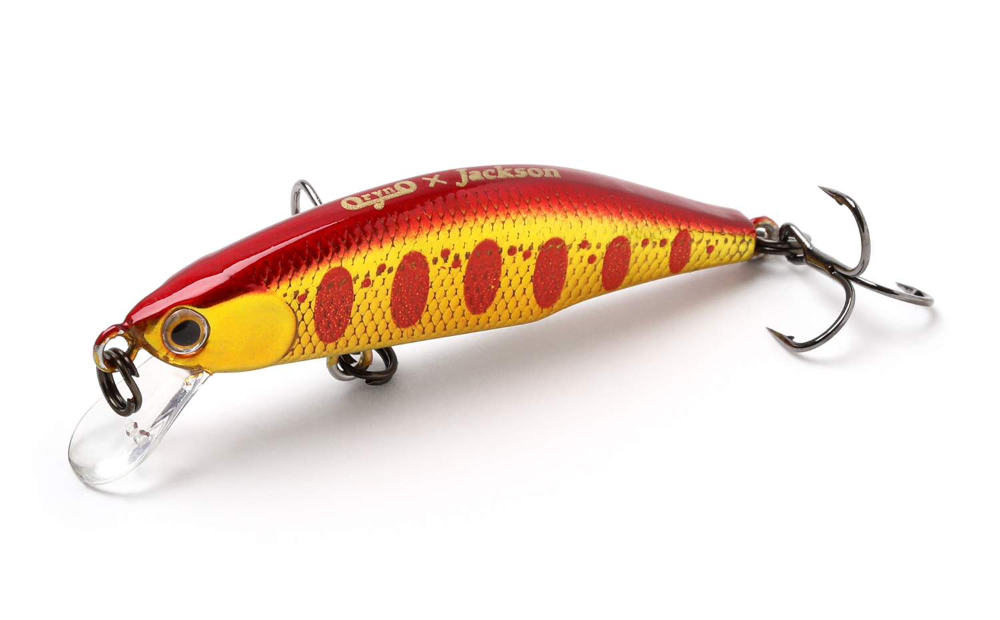
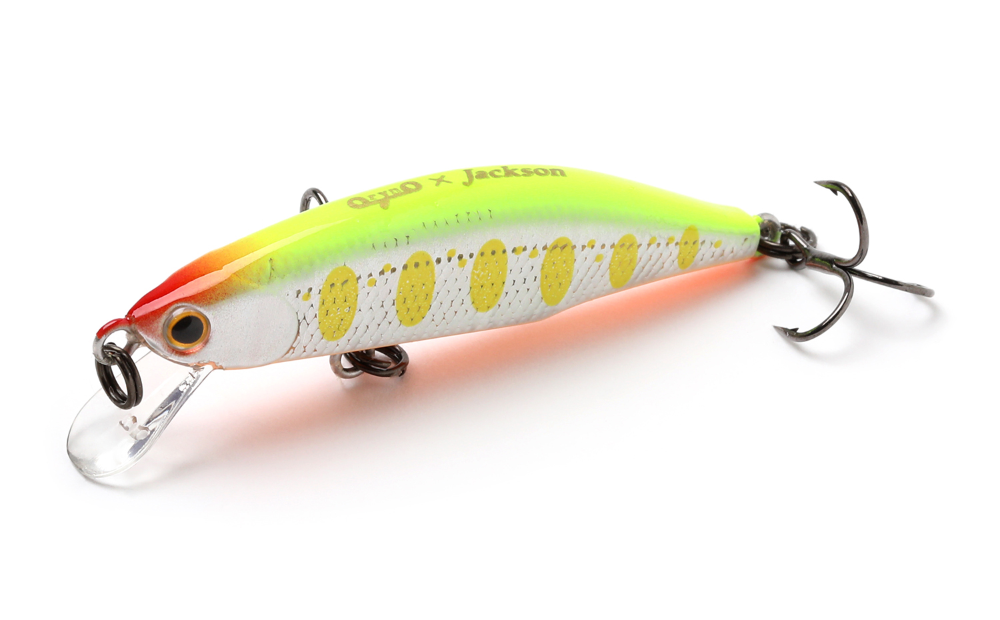
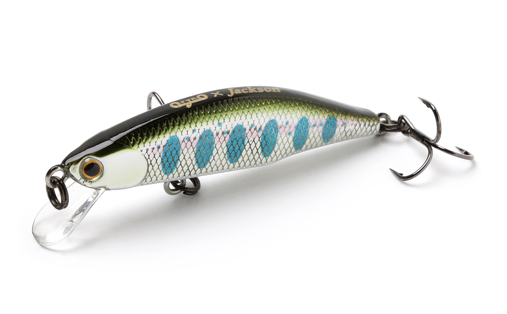
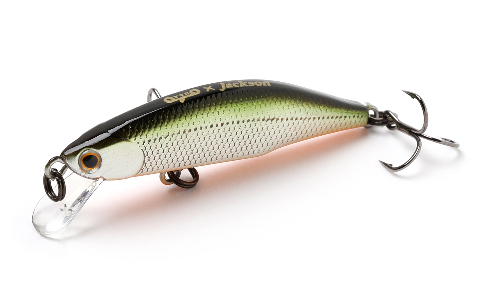

メテオーラ
（Meteora）
メテオーラはJackson（ジャクソン）のトラウト用シンキングミノーです。
現在の渓流ミノーのスタンダードとして作られた、フラットサイドのシンキングミノー。体高のあるボディで重心を限界まで下げ、激流の中でも水面から飛び出さず、ジャークやトゥイッチにもアングラーの意図どおりに追従します。

画像出典:Jackson公式HP
スペック
- メーカー
- Jackson（ジャクソン）
- タイプ
- シンキングミノー（フラットサイド）
- 全長／自重
- 45mm／3.5g、52mm／5g
- ほかのサイズ
- 63mm／7.5g、70mm／10g、80mm／15.5g
- ターゲット
- ヤマメ・イワナ・ニジマス・サクラマスなど
- 価格
- 1,485円（45）／1,540円（52）（税込）
▼今すぐチェック

メテオーラの特徴
激流でも飛び出さない、渓流ミノーのスタンダード
-
限界まで下げた重心
フラットサイドで体高を持たせ、重心を限界ギリギリまで下げたウエイトバランス。激流の中でも水面から飛び出しにくく、狙ったレンジをキープできます。
-
ジャーク・トゥイッチに素直に追従
低重心でありながら、ジャークやトゥイッチではアングラーの意図どおりに動いてくれます。流れの中でもキビキビとしたアクションを出せます。
-
ヒラ打ちしながらのフォール
タングステンウエイトをコンパクトなボディに絶妙に配置。フォール中も水平姿勢でヒラ打ちし、フラッシングでトラウトを誘います。
メテオーラの使い方
上流に向かってアップクロスに投げ、流れに乗せながらトゥイッチやジャークでヒラ打ちさせるのが基本。流れの強い場所でも飛び出しにくいので、トゥイッチを入れ続けて誘えます。
トゥイッチの合間にフォールを入れると、水平姿勢のヒラ打ちフォールで食わせの間を作れます。
メテオーラの得意な状況
水量が多い日や流れの速い渓流、ほかのミノーが飛び出してしまうような激流。小さめのフラットサイドボディなので、プレッシャーが高い場面でもフラッシングで反応させやすいミノーです。
ワンポイント
63・70・80mmは、ハンドメイドルアー「オライノ」の流星80型のDNAを受け継いだモデル。本流やサクラマス狙いでは大きいサイズ、渓流のヤマメ・イワナでは45・52mmと使い分けましょう。
サイズの使い分け
| サイズ | 全長／自重 | 使いどころ |
|---|---|---|
| メテオーラ 45 | 45mm／3.5g | 小規模な渓流や源流のヤマメ・イワナに |
| メテオーラ 52 | 52mm／5g | 渓流の基準サイズ。流れが強めの場所にも |
| メテオーラ 63／70 | 63mm／7.5g・70mm／10g | 本流や、サクラマス・大型トラウト狙いに |
| メテオーラ 80 | 80mm／15.5g | 本流のサクラマス狙いに。強い流れでもしっかり泳ぐ |
どのサイズもシンキング。流れの強さと狙う魚のサイズで選ぶのがコツです。
人気カラー
45・52のラインナップから4色を紹介します（カラー名は公式の表記のまま）。

AKY アカキンヤマメ赤金ベースのヤマメカラー。増水や濁りのある日に。

CYW チャートヤマメチャートを効かせたヤマメカラー。視認性が高く、ルアーの位置を確認しやすい。

RYⅢ リアルヤマメⅢリアルなヤマメ模様。澄んだ流れでスレた魚にナチュラルに見せたいときに。

TSD テネシーシャッドブラックバスでも定番のシャッドカラー。ほかのヤマメ系で反応がないときのローテーションに。
画像出典:Jackson公式HP
メテオーラに似ているルアー
-
 クミホン70S
ブルーブルー
詳細はこちら＞
クミホン70S
ブルーブルー
詳細はこちら＞
70mm・9gのシンキングシャッド。メテオーラ70と同じくらいのサイズで、ソルトでも使えるミノーとして。
-
 グラバーHi 68S
邪道
詳細はこちら＞
グラバーHi 68S
邪道
詳細はこちら＞
68mmの小型シンキングミノー。激流や早巻きに強いソルト用ミノーとして。
-
 アタル70S
ima
詳細はこちら＞
アタル70S
ima
詳細はこちら＞
70mmのシンキングシャッドミノー。同じサイズ感で、もう少し重さが欲しいときに。